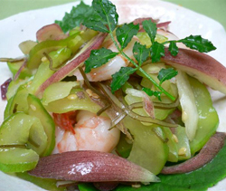

みょうがと白ウリのゴマ酢和え
- 調理時間：20 分
- （一人当たり）
- カロリー：45kcal
- たんぱく質：4.8g
- 脂質：0.7g
- 塩分：0.9g


＜４人分＞
- ミョウガ
- ２～３個
- 白ウリ
- ２００ｇ
- むきエビ
- ８尾
- 細切り昆布
- 少々
Ａ
- ・白ゴマ
- 大さじ１/２
- ・酢
- 大さじ２
- ・砂糖
- 大さじ１
- ・薄口しょうゆ
- 大さじ１
- ・塩
- 少々


- 白ウリは種をスプーンで取り除いた後、薄切りにして、塩をまぶし、しんなりしたら水気をしぼる。
- ミョウガは食べやすい大きさに切り、一度水に放し、ザルにあげる。
- むきエビは熱湯でサッとゆがき、冷ましておく。
- ボウルにＡの調味料を合わせておく。
- ①、②、③、細切り昆布を④のゴマ酢で和える。
みょうがと白ウリのゴマ酢和え
湿気の多いこの時期は、消化器系にダメージを与え、疲労感やだるいといった症状をまねきやすい季節です。さらに、夏の暑さは体に熱を溜めこみます。そんなときは、体を冷やす食べものの力を借りて、熱を取り除くことも大切です。ウリ科の食物にはカリウムが豊富なものが多いので、これからの時期は特に積極的に摂るとよいでしょう。カリウムは体内のナトリウムを排泄するはたらきがあり、塩分を排泄することで体内のほてりをとり、結果的に体を冷やす作用があります。今回使用した「白ウリ」がそれに当たります。さらに、水分も多いので水分補給にピッタリです。
ほどよい酸味で味付けしたゴマ酢にミョウガの香りがさわやかな和えものは、食欲を促進しつつ、胃腸の調子をととのえ、体にたまった余分な水分を除きます。梅雨を乗り越え、夏に備える食事を心がけましょう。